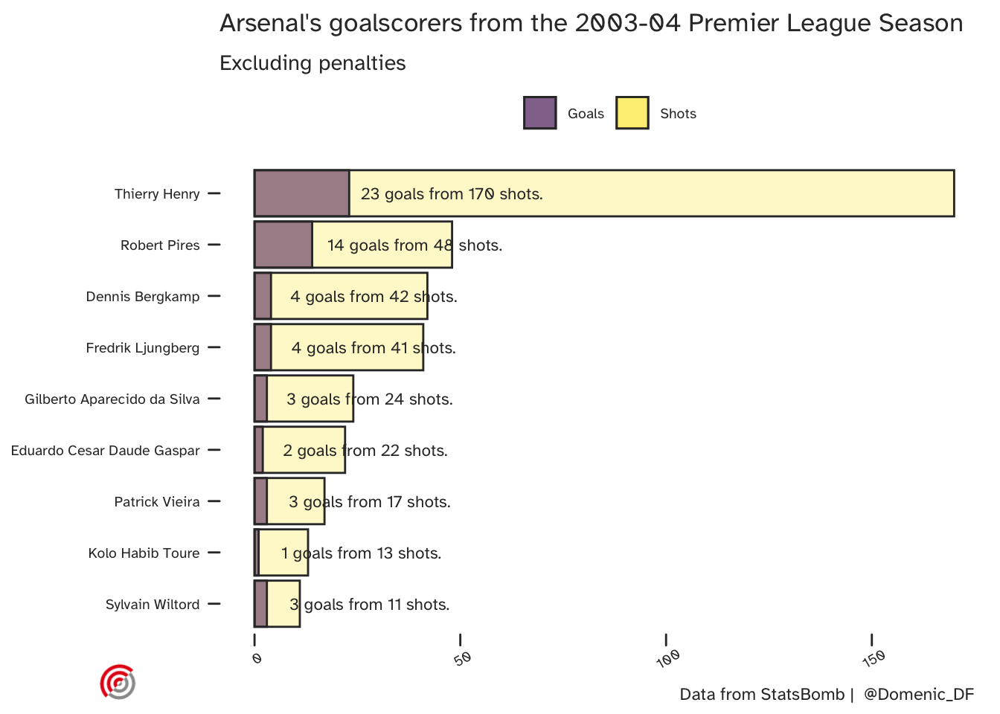
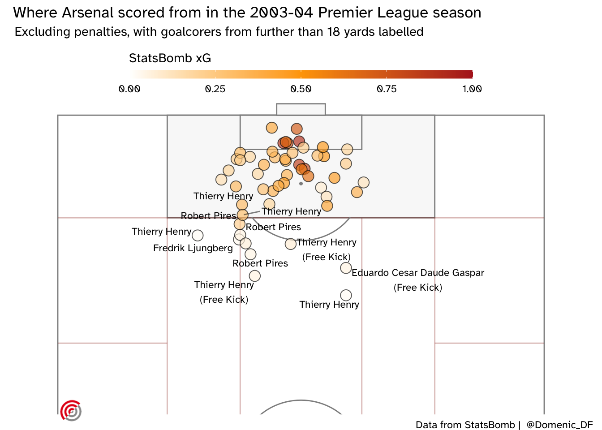
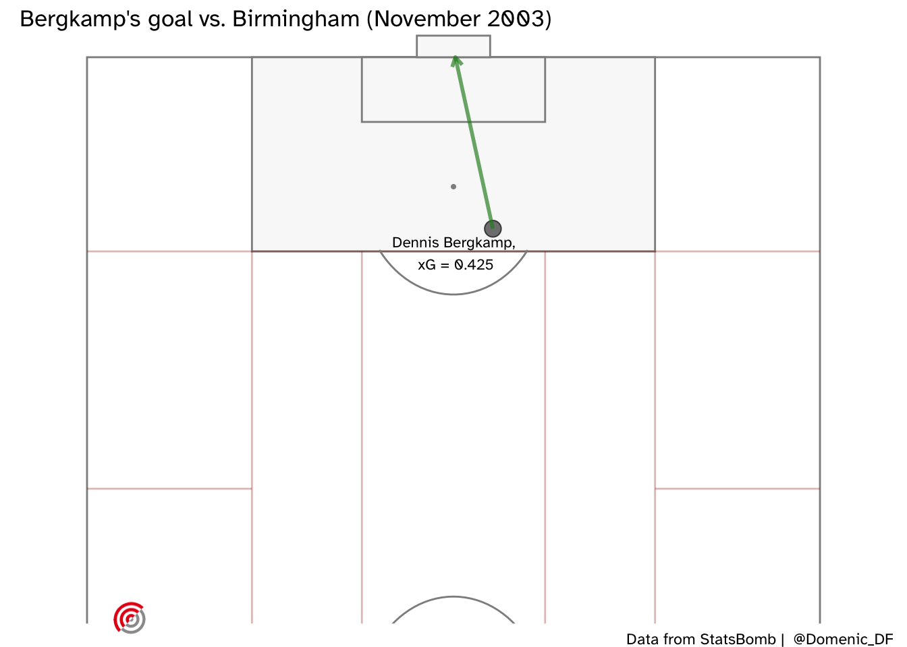
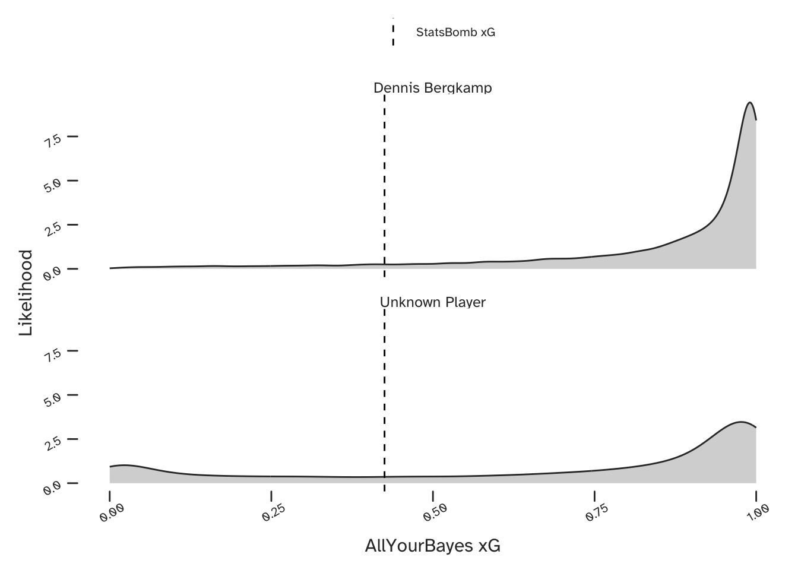
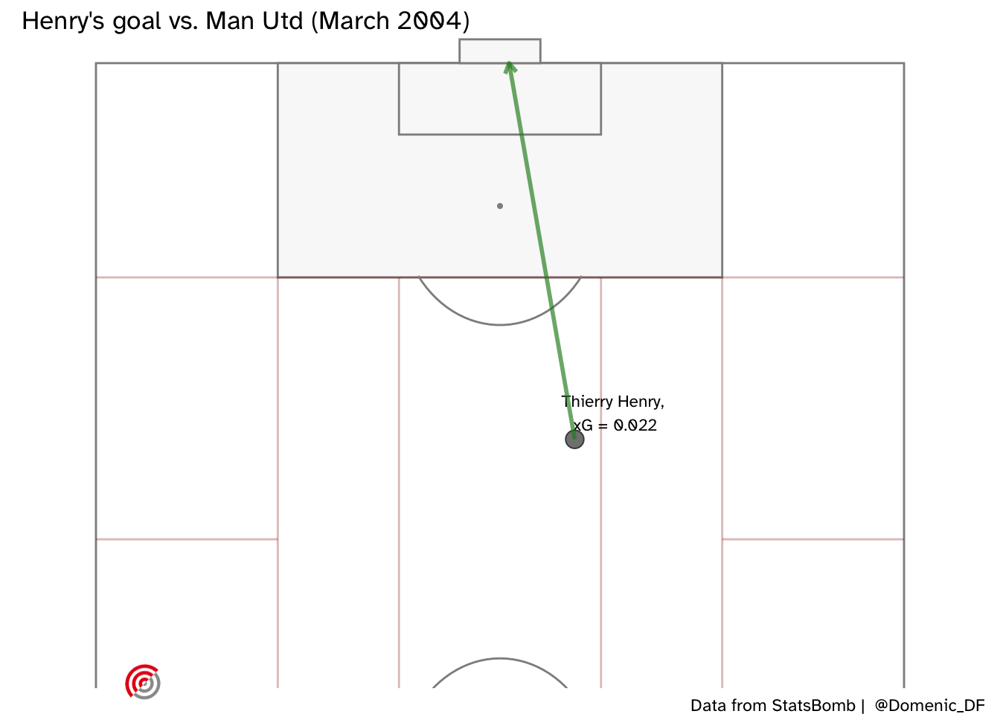
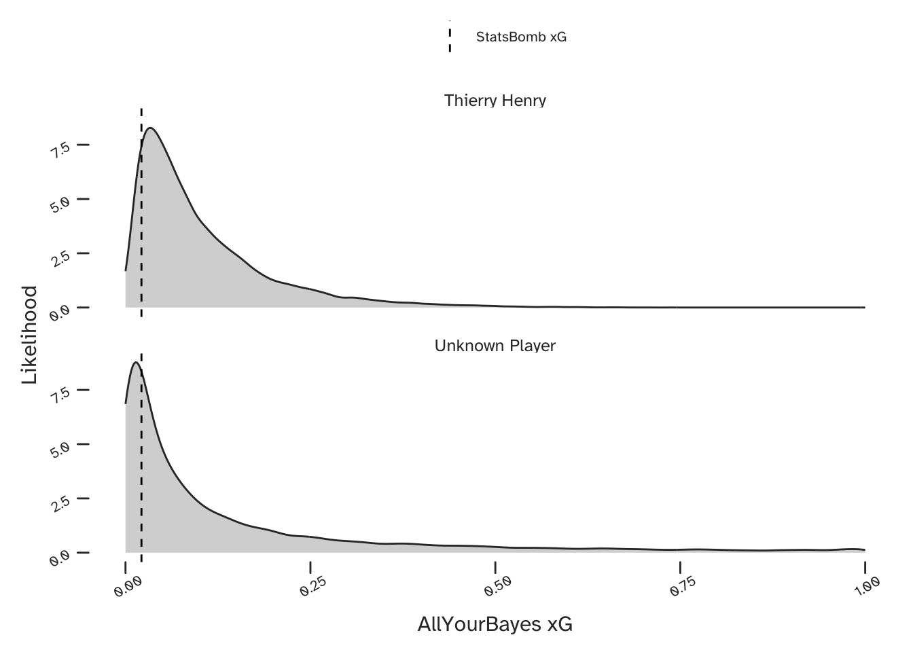
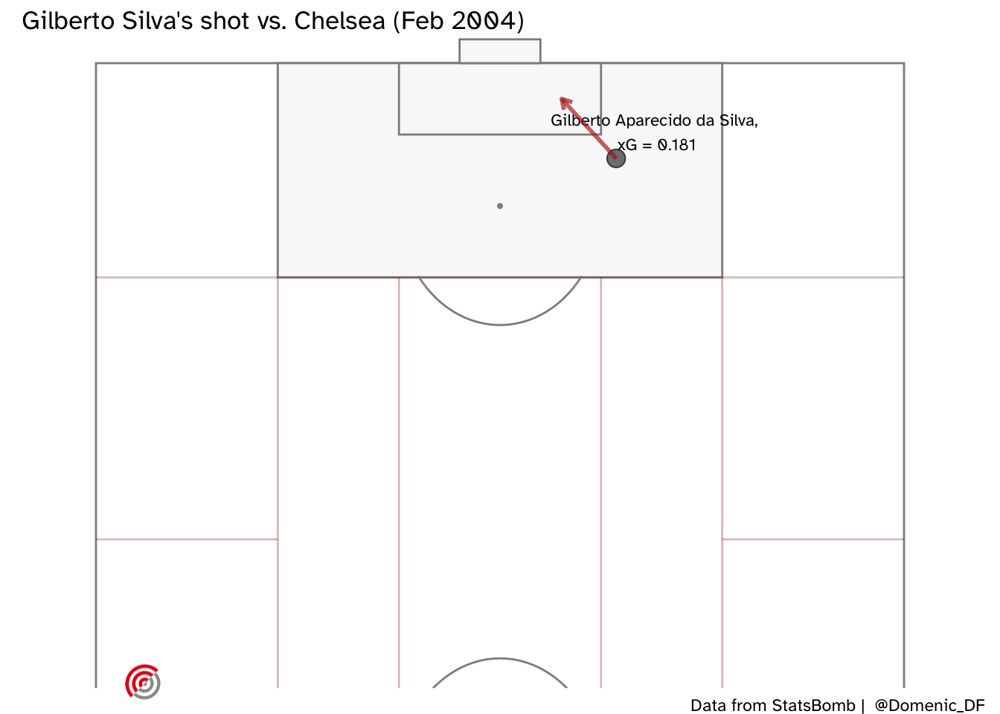
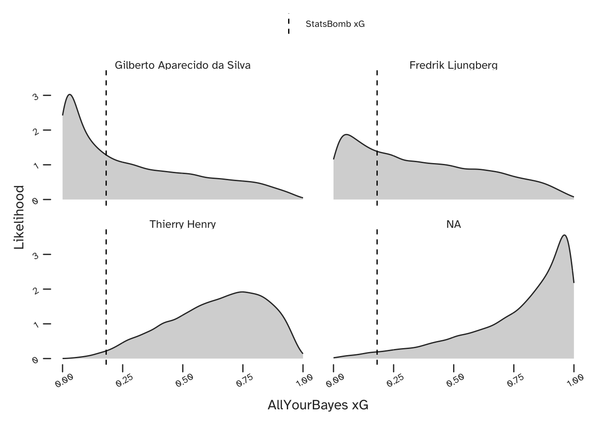

TLDR
The Expected Goals (xG) metric is now widely recognised as numerical measure of the quality of a goal scoring opportunity in a football (soccer) match. In this article we consider how to deal with uncertainty in predicting xG, and how each players individual abilities can be accounted for. This is part 1 of the article, which is intended to be free of stats jargon, maths and code. If you are interested in those details, you can also check out part 2.
What are Expected Goals?
Opta sports tell us that the Expected Goals (or xG) of a shot describe how likely it is to be scored. The cumulative xG over a game will therefore give an indication of how many goals a team would usually score, based on the chances they created.
Why would anyone be interested in this? Because if the xG model is any good, it can be the basis for an evidence-based style of play. If certain individuals in a team enjoy shooting from long-distance (or any other set of circumstances associated with a low xG), they may be encouraged to keep possession until a more favourable (higher xG) chance arises.
There is no universally accepted way of calculating xG, so there are many competing models around. In this article I will describe a statistical model that cares about who is taking the shot, but does not treat each player as a separate independent case. More on this later…
Data: Arsenal’s Invincibles (Courtesy of StatsBomb)
Once upon a time (in the 2003-04 season), Arsenal FC were brilliant. That squad is still referred to as the Invincibles after finishing the season without a defeat in the league, scoring the most goals and conceding the fewest. Their top scorer, Thierry Henry, finished 4th in the Ballon d’Or voting this season (having finished 2nd the season before). Unfortunately José Mourinho arrived at Chelsea the following season and Arsenal haven’t won the league since.
I’m using Arsenal’s unbeaten league season as an example because StatsBomb have kindly made all this data freely available in their R package.

Here are their league goal scorers:

And here’s where the goals were scored from:

The above plot shows that many of these goals were scored, even though the (StatsBomb) xG was relatively low. In fact the mean xG of the shots they scored was 0.33. This isn’t necessarily a problem as we do see improbable goals. Below is Giorgian De Arrascaeta’s contender for the 2020 FIFA Puskas award. Was anyone expecting him to score this chance? Could he do it again?
An ideal xG model would correctly predict every goal without error, but the many sources of variability in the game means that this isn’t happening any time soon. A Bayesian model (such as the one I’m proposing) will include uncertainty in it’s predictions, letting us know when it can narrow down a predicted xG, and when there is a larger range of credible values based on the available information.
Would Henry have scored it?
Another feature that I’ve introduced to the model is the relationship between the data from different players. I want the model to distinguish between whether a team creates an opportunity for their top scorer, or their full-back who has never scored. One is clearly preferable, and should have a higher xG to reflect this. Why would this matter? Shooting from wide positions may (on average) be unlikely to pay off, but if your team has a winger who is especially adept at it, then it may be a strategy they should pursue.
For instance, Giorgian De Arrascaeta may have had a higher chance of scoring that bicycle kick when you consider that he was also nominated for the 2018 FIFA Puskas award for scoring another acrobatic volley.
The practical issue with considering each player separately is you now have many, smaller datasets. Larger datasets contain more information allowing for model parameters to be estimated more precisely. This sometimes encourages us to throw all our data into a single population and pretend we have a larger dataset. Your software will be happy, since it won’t know the difference, but you will lose the valuable player-specific information.
Bayesian models can do even better than this though. Consider some data that was collected from Arsenal’s defensive midfielder, Gilberto Silva. He scored 3 league goals in their invincible season, but his primary duties were defensive. He had different characteristics than Thierry Henry, but there is some commonality to take advantage of here. If Gilberto Silva scores an opportunity that gives me some information about whether Thierry Henry could have scored it too. How much information? That depends on how similar they are. Unless we tell the model, it will assume we cannot learn anything about these players from the other. Both were professional footballers. Neither was a hockey player, or a tree, or a kitten - though a statistical model could not intuit this. If the data did indicate that they were in fact very different players, then the special model structure that we are using would recognise this and not share information between them to the same extent.
If the above concept make sense to you, then congratulations - you appreciate the utility of multi-level (partial-pooling) Bayesian models. This sharing of information is one of many reasons Bayesian methods can perform so well on small (and imperfect) datasets.
What does the Model do?
We have a model that describes uncertainty (using probability) and makes both team-level and player-specific predictions. Here are some examples:
How about Dennis Bergkamp’s dinked finish when clear through on goal against Birmingham. Remember it? Me neither - here’s where the shot was taken from:

And our predicted xG is shown below, both for Dennis Bergkamp (upper) and for the case where any Arsenal player could be shooting (lower). Here is a great example of being able to make a better prediction conditional on the information of who is taking the shot. The model has identified that Bergkamp was very capable of scoring these kind of chances and was therefore able to identify a narrow range of very high xG values. However, if we were considering a generic player in the Arsenal team, there is more uncertainty in our prediction.

What about Thierry Henry’s long range goal against Man Utd? (Note that the straight arrow in the below plot does not reflect the true trajectory of his shot).


OK, so I wouldn’t have seen that one coming either ….but I would have given it more of a chance knowing who was shooting.
Here is a final example - a shot from Gilberto Silva, on his stronger foot, which was saved by Neil Sullivan (who I’d completely forgotten had signed for Chelsea that season). I thought this was worth looking at because StatsBomb’s xG suggests this was a very good chance.

Our model did not expect him to score, and also predicted that Freddie Ljungberg would have missed. Henry (unsurprisingly) is expected to have had a better chance, but interestingly, our model thinks that Arsenal’s goalscoring winger Robert Pirès would have been most likely to score this opportunity.

Final Thought: Making Sense of Probabilistic Predictions

What should we make of the above predictions? The single values (point estimates) provided by analytics companies may be a bit easier to read, but I’m suggesting that they are not as useful. We should want our models to tell us when they are not sure. There is more information in a probabilistic prediction than a point estimate, which means you can go from the former to the latter, but not vice-versa. The type of model we have discussed in this article has the added benefit of sharing information between different players in a mathematically coherent way (see part 2) for the technical details).
Citation
@online{2020,
author = {},
title = {Uncertainty in {xG.} {Part} 1: {Overview}},
date = {20-12-10},
url = {https://allyourbayes.com/posts/xg_pt1},
langid = {en}
}